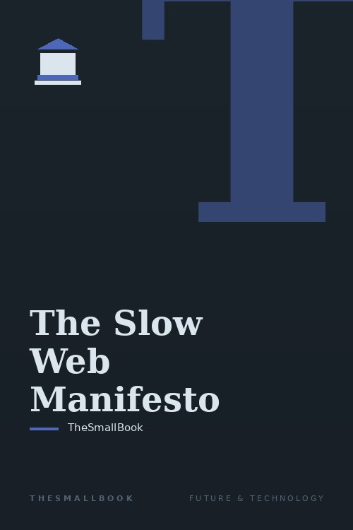

Library › Future & Technology
The Slow Web Manifesto - Summary & Key Lessons

A TSB Original on reading deeply in an internet built for skimming.
📖 OPEN THE FULL INTERACTIVE BREAKDOWN →🌐 Read it in Hindi, Hinglish, Gujarati, Tamil & 22 more languages, with audio.
💡 The Big Idea
This TSB Original argues that how we read the internet is quietly deciding what kind of minds we have. It diagnoses the skim economy, infinite feeds, notification weather, articles abandoned at paragraph three, then proposes the slow alternative in practical detail: a small trusted source list, read later queues that actually get read, single tasking rituals, annotation as digestion, and finishing as a discipline. It is a manifesto with a method, written by the studio behind a book summary library, in defence of the whole book.
🧠 The 8 Key Lessons
Lesson 1: The Skim Economy Wants Your Mind in Pieces
One: The Diagnosis
The manifesto opens with the business model: platforms are paid for returns, not completions, so every design decision, the infinite scroll, the autoplay, the red badge, exists to fragment your attention into sellable pieces. Readers are not weak; they are outnumbered by engineers. Understanding this changes the remedy from willpower to architecture. You do not resist a casino by character. You leave, or you visit with a plan, a budget and a leaving time, which is exactly how the slow web treats every feed.
📖 Example: A reader who tracked his reading for a month found 214 articles opened and nine finished, a library of first pages. His summary habit had the same shape: hundreds of books, none inhabited. The numbers, not guilt, made the case for the manifesto's method, and the method began with his opening habit, not his intelligence. Read the full example →
⚡ Do this: Count last week's opened versus finished pieces of reading. Write both numbers down; they are your baseline, not your shame.
Lesson 2: Fewer Sources, Deeper Wells
Two: The Source Diet
The slow web's first practice is a source diet: a short list of writers and publications you trust, chosen on purpose, revisited by default, replacing the algorithmic river. The chapter argues from an older technology, the village, where a few known voices, argued with over years, built judgement, while the river builds only reaction speed. Practical guidance follows: how to choose the list, how to let sources go, and the heretical joy of reading yesterday's piece properly instead of today's instantly.
📖 Example: One editor in our interviews cut forty bookmarks to seven and began finishing the seven. Within a quarter his conversation changed noticeably: fewer hot references, more completed thoughts, and the unsettling calm of a man whose opinions had footnotes. His friends assumed he had taken a holiday from the internet. He had taken ownership of it. Read the full example →
⚡ Do this: Cut your source list to ten this week, in writing. Route your reading through the list for fourteen days and note what changes.
Lesson 3: The Read Later Queue Is a Promise, So Keep It Small
Three: Queues, Saves and Returns
Every reader's saved list is a graveyard of good intentions, and the manifesto treats it as a design problem: a queue longer than a week is a guilt machine, not a library. The practices: save rarely and deliberately, process the queue at a fixed weekly sitting like a small magazine you edit for yourself, delete without ceremony, and return to the best pieces a second time, because slow reading's real secret is rereading, where depth actually lives.
📖 Example: A professor keeps her queue at twelve by charter: a new save requires a deletion or a reading. Sunday coffee processes the queue to zero. She reports the constraint produces the behaviour every app promised: she reads what she saves, and saves only what she will read. Read the full example →
⚡ Do this: Set your queue cap today, twelve is a good number, and schedule the weekly processing sitting in your calendar now.
Lesson 4: Annotation Is Digestion
Four: Making It Yours
The slow reader writes back: margins, highlights with reasons, a sentence of summary in their own words, one idea carried into the week. The chapter draws on how memory actually works, retrieval and elaboration, to show that unmarked reading is mostly tourism. It gives a light system anyone will sustain: three marks only, important, surprising, disputed, and a five line digest on Sunday. The goal is not scholarship; it is that some of what you read should still be yours in a year.
📖 Example: A reader who began the five line Sunday digest filled a notebook in a year and discovered, reviewing it, that his opinions had an archaeology. Ideas he thought were his turned out to be dated entries, arguable and improvable. The notebook became the most interesting thing he owned, outranking the feeds that once owned him. Read the full example →
⚡ Do this: Annotate your next long read with the three marks, then write its five line digest before the day ends.
Lesson 5: Finish Things: The Manifesto's One Commandment
Five: Completion as Character
The closing chapter elevates finishing into the slow web's core ethic: books closed, articles ended, series completed, because endings are where arguments reveal themselves and where the reader's judgement is finally exercised. It confronts the sunk cost objection cheerfully, life is too short for bad books, and supplies the abandonment rule that keeps finishing honest: quit at ten percent, decisively, or finish. What it forbids is the third state, the eternal half read, which is the feed's favourite product.
📖 Example: A book club in our pages adopted the ten percent rule and a public finish list. Completion rates tripled in two months, not because members read more hours but because the half read purgatory stopped consuming them. Several reported finishing, at last, books carried across three house moves. Read the full example →
⚡ Do this: List your current half read things. This week: abandon each at its next sitting or schedule its finish date. No third state survives Sunday.
Lesson 6: The Commonplace Book Is the Slow Web's Memory
The Practice
For centuries, serious readers kept commonplace books: passages copied by hand, argued with in margins, reread until they became part of the reader's own thinking. The slow web's equivalent is whatever system lets your reading compound instead of evaporating into a liked and forgotten feed. The format matters less than the retrieval: notes you revisit beat archives you merely keep. A mind is known by what it can summon without a search bar, and summoning is built by transcription, the slowest and therefore deepest of the reading arts.
📖 Example: The manifesto's readers who kept paper commonplace books reported the same anomaly: they copied less than they saved digitally and remembered nearly all of it. The hand is a filter the save button refuses to be, which is why every tradition that cared about wisdom built transcription into the curriculum. Read the full example →
⚡ Do this: Start the commonplace habit today: one passage copied by hand or typed with a sentence of your own beneath it. Revisit the week's pages every Sunday.
Lesson 7: Slow Is a Quality Standard, Not a Speed Limit
The Practice
The manifesto is routinely misread as nostalgia, so its closing clarification matters: slow reading is not about duration but about completion, digestion and use. A book finished slowly and argued with is fast in the only currency that matters, changed behaviour per hour, while the hundred book year that leaves no trace is the truly slow method. Measure your reading by what survives it, quotations you can deploy, decisions it altered, and let the annual count fall where it may. Vanity metrics are fast food's gift to the library.
📖 Example: Its favourite statistic is a reader who finished nine books in a year and could teach all nine; the programme contrasts the hundred book finisher who, interviewed in January, retained the titles. The nine book reader disputes being called slow, correctly, since her knowledge was compounding and the other's was evaporating at industrial speed. Read the full example →
⚡ Do this: Judge last month's reading by survival: write what remains, unaided, on one page. Let that page, not the finished count, set this month's pace.
Lesson 8: Defend the Margins: Where Slow Readers Think
The Practice
Marginalia is the slow web's comment section, except the comments are addressed to the author and your future self instead of an audience performing for itself. Arguing in margins, questioning, connecting, objecting, converts reading from consumption into correspondence, and a book so treated becomes a record of two minds meeting. The practice also solves retention's mystery: we remember what we answered. Lend such books carefully; you are lending the conversation, and borrowers who return them unmarked have only read half.
📖 Example: The manifesto collects famous margins, scientists annotating rivals into new theories, poets drafting replies that became their own best poems. Its point for ordinary readers is democratic: the pencil is not disrespect. It is the entry fee for the level of the library where the authors are still, in every sense that matters, present. Read the full example →
⚡ Do this: Read your next chapter with a pencil and a rule: one objection, one connection, one question per chapter, in the margin. Answerability is retention.
✅ 5-Step Action Plan
- Count opened versus finished reading; write the baseline.
- Cut sources to ten; live on the list for fourteen days.
- Cap the read later queue at twelve; process it weekly.
- Annotate with three marks; write five line digests on Sundays.
- Apply the ten percent rule to every half read thing this week.
- Reread one great piece this month instead of opening ten new ones.
- Defend one slow hour daily; it is the manifesto in practice.
⚠️ When This Doesn't Work
A TSB Original, proudly opinionated. Readers whose work requires monitoring fast information flows will adapt the method to shifts and beats rather than abandon it; the manifesto argues for islands of slowness, not ignorance.
💀 The Graveyard Proves It
💬 Best Quotes from The Slow Web Manifesto
- “Skimming is not reading. It is sampling a life you never live.”
- “Finish things. The ending is where the meaning is kept.”
- “Your attention is the last private property. Fence it.”
Interactive version: mark lessons as read, listen in your language, share quote cards.